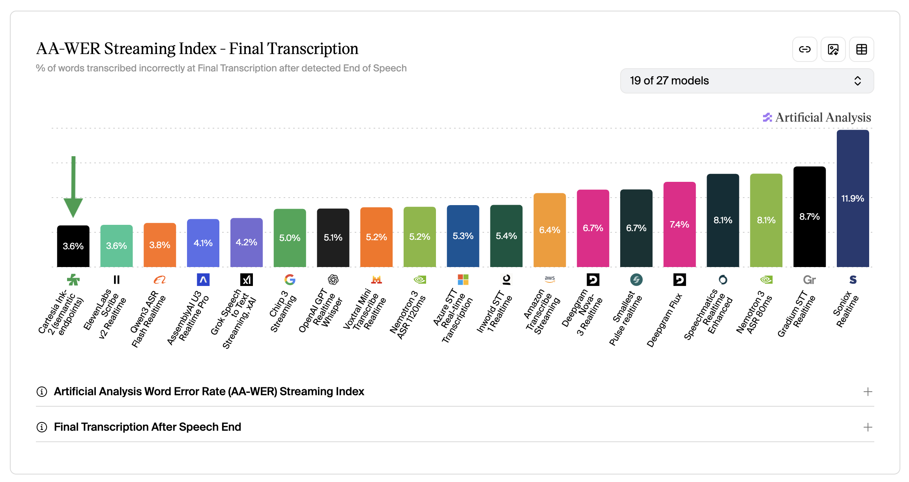
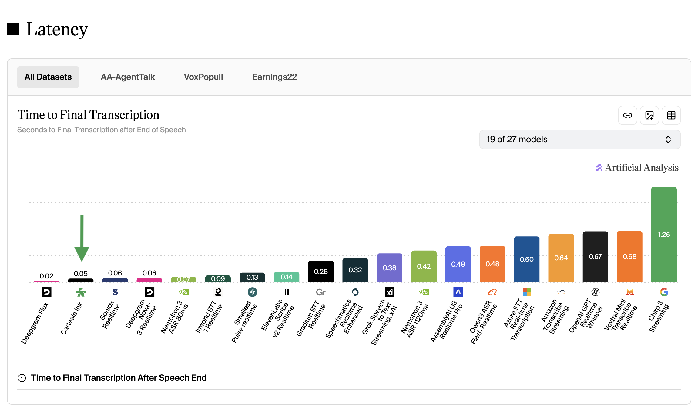
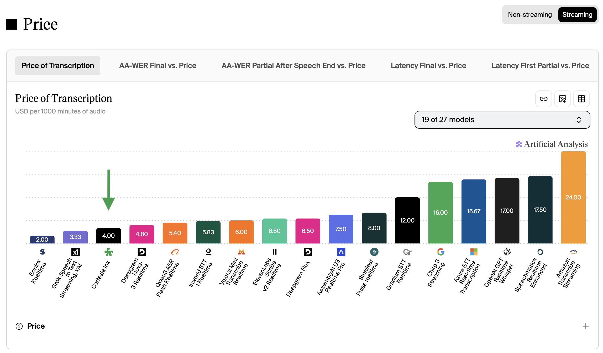

Vibes or Evals?
When you’re choosing an STT system for your voice-agent, there are so many options and everyone claims to be “The Best Model”
Leaderboards are nice because they’re usually done by 3rd parties so they feel more “trustworthy”, but they don’t capture real voice-agent audio, and are often missing key metrics. To capture these things you really need to be thoughtful about evals.
In lieu of thoughtful evals, you can usually get an idea of where a model excels or falls short just by playing with it for a few minutes! Even a quick vibe-check is often more powerful than looking at leaderboards, since the leaderboards can actually be gamed, might be too far from your use-case, or measuring the wrong things.
Where do benchmarks fall short?
I have a strongly-held opinion that evals should be as close as possible to the real calls!
-
collect REAL data as close to how your model will be used
- real users, accents, noises, scenarios, etc
- if untenable, use something like Apptek
-
simulate REAL calls as closely as possible
- real streaming, measuring latency by wall-clock-time when responses arrive
- full/unclipped calls — never short clips!
-
measure the metrics that actually matter for voice agents
- WER — be very thoughtful on text normalization, or use an LLM to judge if the transcript is semantically accurate
- precision/recall on entities and complex terms
- precision/recall on turn-taking prediction
- final transcript latency on each turn after the user ends
Most leaderboards:
- collect data from audiobooks, earnings calls, meetings — not voice-agent calls!
- push through all audio at once instead of streaming audio in realtime
- only measure WER, not entity or turn-taking metrics that matter for voice-agents
A corollary to this is that leaderboards are a terrible way to make
purchasing decisions! This isn’t cope — ink-2 is … really
good on leaderboards, we just think that the real-world is a bit messier :)



We didn’t design ink-2 for leaderboards! We designed it for real
voice-agent calls!
Since I can’t get out and collect calls for you that sound like your domain, maybe what I can do is appeal to your ~ vibes ~ which I actually believe are better than leaderboards!
Vibe Collection Methodology
We vibe-coded a comparison tool that allows us to play an audio file and watch the
transcripts stream out in realtime. It also shows us where each
<end-of-turn> prediction happened for each provider to compare latency.
I picked 4 competitors to compare against — all of these systems are REALLY GOOD. Tons of people love them for building voice agents, and they do well on our internal evals! No shade towards DG, 11L, Assembly, Soniox — these are amazing products too, and for your specific use-case maybe they have something that fits better 🤷 You should eval in the way I described at the top of this post to decide for yourself!
Cherry-Picking
Are these videos cherry-picked? Yes!
But I really didn’t have a hard time picking these cherries — many things you see here are patterns that I actually found to be a surprisingly consistent.
Were there some examples where we got a word wrong and a competitor got it correct? Yes!
But for the most part in the categories below ink-2 really does perform
favorably.
Entities and Numbers
Notes:
- Deepgram Flux turns
5→life - Assembly struggles hugely in turn-taking prediction
- Ink-2 formatting could be better (we’ll fix this soon)
- Soniox & 11L perfect!! (a little slow on turn-taking but ok)
Turn-Taking
- Ink-2 is pretty good at predicting (via tone & semantics both) when people are pausing to think or when they’re finished talking
- Deepgram does well here too!
- All other providers struggle on turn-taking.
- One bonus — notice how sloowwwww Ink-2 is at the end of the phone number. This is intentional since it's incomplete! The model is smart enough that it waits a really long time — it expects more digits :)
- Another example that shows how important “semantic” or intelligent turn-detection is!
- The user is clearly not finished with the address after “123”
Background Speech & Crossbleed
- This is simulating a drive-through order for a “Number 5” where there’s music playing in the car
- Note that the goal is NOT to transcribe the music — this is almost never what we want…
- Another drive-through example — notice more providers struggle on background speech here
- This is an example with crossbleed, where the speakerphone mic is picking up the caller
- In cases like this, we want the ASR to be smart enough to ignore the crossbleed, AND to detect each turn, even though they’re fast and short
- Ink-2 is the only model that does this well :)
Accents
- All providers except deepgram do phenomenal here — kudos!
- I think this is another common theme of DG Flux being incredibly fast and great at turn taking — but not quite as intelligent.
Knowledge & Contextuality
- A fun one — some models are bigger footie fans than others :)
- Taking context into account and having world knowledge is really important for a great transcription system!
To try Ink-2 go to our playground!